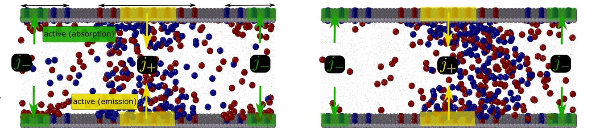

Spontaneous flow from active ionic fluxes
Biological ion channels and pumps move charge without any external voltage, whereas synthetic nanofluidic devices usually need one. We considered a nanochannel whose walls carry a perfectly symmetric pattern of surface charge together with active cation sources and sinks. Combining dissipative particle dynamics with explicit ions, lattice-Boltzmann simulations and continuum theory, we found that above a critical active flux the channel spontaneously breaks its left–right symmetry and drives a directed flow, reaching hundreds of millimetres per second for realistic parameters.
The onset is a supercritical pitchfork bifurcation, set by the competition between advective ion transport and electro-diffusive relaxation. For large-scale particle simulations I implemented local ion injection and removal in LAMMPS.
